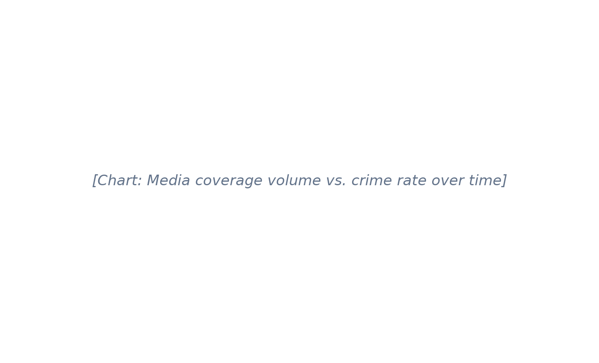
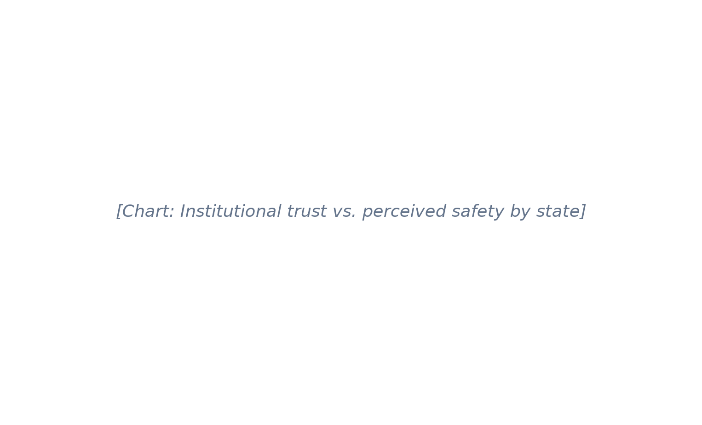
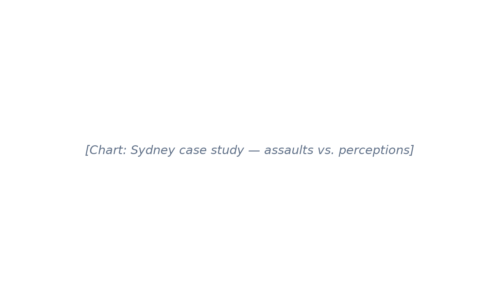
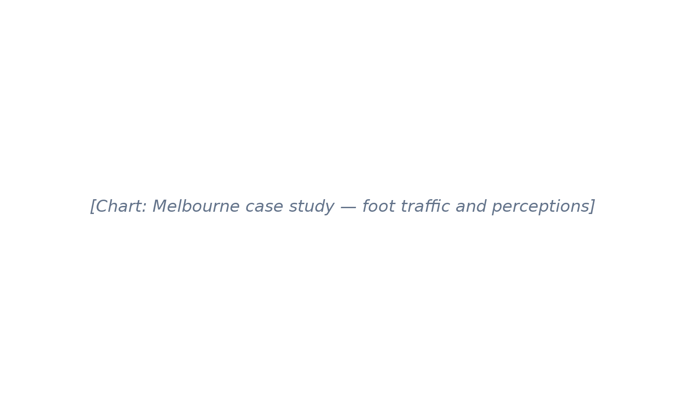
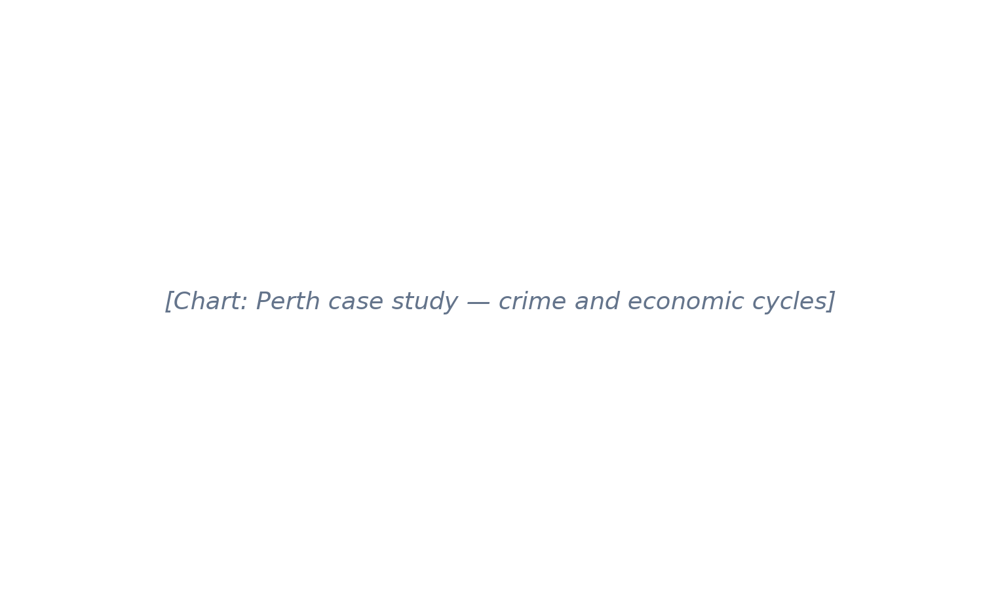

Australia is doing better and better at reducing crime – so why do many feel less safe than before?
Author
Bowen Wu (550707800), Mauro Lim (541043737)
Published
July 22, 2026
1 Introduction
Public safety is a key indicator of Australia’s social well-being. This is typically measured through two complementary metrics: objective administrative records that track the occurrence of crime events, and subjective population surveys that capture our society’s perceptions of crime.
However, in recent years, there has been a striking divergence between these two categories of statistics in Australia.
According to objective crime statistics, victimization rates for almost every crime have followed a sustained downward trend for nearly thirty years, providing the impression that Australia is performing historically well in maintaining safety compared to previous generations. However, opinion polling on perceptions of safety, especially those conducted post-2019, tell the opposite story, with an increasing proportion of the population not feeling safe in public environments and reporting crime as a “growing problem in my community”.
Understanding the factors that contribute to this gap is crucial for policymakers, public officials, and police departments, as reducing both real crime occurrence and persistent anxieties about crime are instrumental in fostering a greater Australian social well-being.
1.1 Inquiry question:
“How well do objective crime rates correlate with public perceptions of safety in Australia, and what explains their difference?”
2 The Data: What the Numbers Actually Say
Before we can explain the gap between reality and perception, we must first establish what reality looks like. The data tells a remarkably consistent story.
Figure 1: Australian recorded crime rates per 100,000 population, 1990–2024. Data: ABS Recorded Crime – Victims.
Key finding: Homicide rates in Australia have fallen by more than 50% since 1990, from approximately 2.0 per 100,000 to under 1.0. Assault and robbery have followed similar downward trajectories, even as Australia’s population has grown by over 40%.
2.2 Breaking Down the Categories
Not all crime has declined uniformly. Understanding the variation helps us see where public fear may have a rational basis — and where it does not.
Figure 2: Percentage change in recorded crime by category, 2010 vs 2024.
NoteData Sources & Methodology
Primary source: Australian Bureau of Statistics, Recorded Crime – Victims (cat. no. 4510.0), 1990–2024
Population denominator: ABS Estimated Resident Population
Rates calculated: Incidents per 100,000 population, age-standardised where appropriate
Note: Recorded crime reflects police-reported incidents; under-reporting may vary by crime type
3 The Perception Gap: Fear on the Rise
If crime is falling, why do Australians report feeling less safe? The answer lies in a growing body of survey data that tracks not what happens, but what people believe is happening.
3.1 The Scanlon Foundation Surveys
The Scanlon Foundation’s Mapping Social Cohesion survey has asked Australians about their sense of safety since 2007. The trend is striking.
Figure 3: Percentage of Australians reporting they feel ‘safe’ or ‘very safe’ walking alone at night, 2007–2024.
“In 2007, 72% of Australians felt safe walking alone at night. By 2023, that figure had fallen to 54%.”
3.2 Demographic Divides: Who Feels Unsafe?
Fear is not distributed evenly. Women, young people, and residents of major cities report significantly lower levels of perceived safety than the national average.
Figure 4: Perceived safety by demographic group, 2023. Error bars show 95% confidence intervals.
3.2.1 Key demographic patterns
Gender gap: Women are approximately twice as likely as men to report feeling unsafe walking alone at night
Age paradox: Young adults (18–34) report higher fear than older Australians, despite being the demographic least likely to be victims of violent crime
Urban anxiety: Residents of Sydney and Melbourne report lower safety than those in regional areas, even though regional crime rates are often comparable or higher
4 Explaining the Gap: Why Fear Rises as Crime Falls
The divergence between falling crime and rising fear is not unique to Australia. Researchers across the world have identified several interconnected forces that drive this paradox.
4.1 The Media Amplification Effect
News coverage of crime has increased in volume and intensity even as actual crime has declined. Social media has accelerated this trend, creating what some researchers call “mean world syndrome” — the belief that the world is more dangerous than it actually is.
Code
# TODO: Load media monitoring data (e.g., Factiva or Media Cloud)fig, ax = plt.subplots(figsize=(10, 6))ax.text(0.5, 0.5, '[Chart: Media coverage volume vs. crime rate over time]', ha='center', va='center', fontsize=14, color='#64748b', style='italic')ax.set_xlim(0, 1)ax.set_ylim(0, 1)ax.axis('off')plt.show()

Figure 5: Volume of crime-related news articles vs. actual crime rate, 2010–2024.
4.1.0.1 Traditional Media
Evening news bulletins still lead with crime stories
“If it bleeds, it leads” remains a ratings strategy
Coverage focuses on rare, violent incidents rather than trends
4.1.0.2 Social Media
Viral videos of assaults create impression of epidemic
Local community groups circulate every incident in real time
4.2 The Psychology of Risk Perception
Humans are not rational calculators of risk. We overestimate threats that are vivid, recent, or beyond our control — and underestimate threats that are familiar or gradual.
TipCognitive Bias at Work
Availability heuristic: People judge the likelihood of events by how easily examples come to mind. A viral video of a one-punch assault is more “available” in memory than a 30-year statistical trend, making random violence feel more common than it is.
4.3 Urban Design and the Nighttime Economy
The way Australian cities have evolved may contribute to feelings of insecurity even in safe environments. The shift toward apartment living, 24-hour nightlife precincts, and poorly lit public transport interchanges creates spaces that feel unsafe, regardless of actual risk.
Figure 6: Reported safety concerns by location type, major Australian cities, 2023.
4.3.1 The “eyes on the street” hypothesis
Jane Jacobs’ classic theory suggests that safety comes from natural surveillance — people watching the street as part of their daily routine. As Australian cities have become more car-dependent and less mixed-use, this organic surveillance has declined in many areas.
4.4 Trust in Institutions
There is evidence that fear of crime is partially a proxy for broader social anxieties. When trust in government, police, and community institutions declines, so does the sense of safety — even when objective conditions are stable or improving.
Code
# TODO: Create trust vs. safety scatter plotfig, ax = plt.subplots(figsize=(10, 6))ax.text(0.5, 0.5, '[Chart: Institutional trust vs. perceived safety by state]', ha='center', va='center', fontsize=14, color='#64748b', style='italic')ax.set_xlim(0, 1)ax.set_ylim(0, 1)ax.axis('off')plt.show()

Figure 7: Correlation between institutional trust and perceived safety, by state, 2023.
5 Case Studies: Three Cities, Three Stories
To move from national aggregates to lived experience, we examine how the crime-perception paradox plays out in three very different Australian cities.
5.1 Sydney: The Lockout Legacy
Sydney’s controversial lockout laws (2014–2020) were introduced in response to high-profile alcohol-fuelled violence. They reduced assaults in the CBD and Kings Cross — but also emptied streets and shifted nightlife to less-policed areas. Did Sydneysiders feel safer?
Code
fig, ax = plt.subplots(figsize=(10, 6))ax.text(0.5, 0.5, '[Chart: Sydney case study — assaults vs. perceptions]', ha='center', va='center', fontsize=14, color='#64748b', style='italic')ax.set_xlim(0, 1)ax.set_ylim(0, 1)ax.axis('off')plt.show()

Figure 8: Sydney CBD assault rates and safety perceptions, 2010–2024.
5.2 Melbourne: The Post-COVID Shift
Melbourne’s extended lockdowns during COVID-19 changed how residents used public space. Even as the city reopened, foot traffic in the CBD remained below pre-pandemic levels — and safety perceptions shifted with it.
Code
fig, ax = plt.subplots(figsize=(10, 6))ax.text(0.5, 0.5, '[Chart: Melbourne case study — foot traffic and perceptions]', ha='center', va='center', fontsize=14, color='#64748b', style='italic')ax.set_xlim(0, 1)ax.set_ylim(0, 1)ax.axis('off')plt.show()

Figure 9: Melbourne CBD foot traffic and safety perceptions, 2019–2024.
5.3 Perth: The Resource Boom and Bust
Perth’s economy has swung with the mining cycle, and crime rates have followed — but not always in the expected direction. The resource boom brought population growth and property crime; the bust brought different challenges.
Code
fig, ax = plt.subplots(figsize=(10, 6))ax.text(0.5, 0.5, '[Chart: Perth case study — crime and economic cycles]', ha='center', va='center', fontsize=14, color='#64748b', style='italic')ax.set_xlim(0, 1)ax.set_ylim(0, 1)ax.axis('off')plt.show()

Figure 10: Perth crime rates and economic indicators, 2005–2024.
6 What Can Be Done? Bridging the Gap
If the problem is partly perceptual, the solution cannot be purely statistical. Governments, urban planners, and media organisations all have roles to play in rebuilding Australians’ sense of safety.
6.1 Data-Driven Communication
Crime statistics are typically released as dense PDFs months after the fact. Making data accessible, visual, and timely could help correct misperceptions.
ImportantRecommendation
State governments should publish real-time, localised safety dashboards — not to alarm, but to inform. When residents can see that their suburb is safer than they assumed, perception begins to align with reality.
6.2 Urban Design Interventions
Small changes to the built environment can have outsized effects on perceived safety:
Lighting: Well-lit streets and public transport stops reduce fear more than they reduce crime
Activation: Mixed-use development ensures streets have “eyes” at all hours
Wayfinding: Clear signage and sightlines reduce the anxiety of unfamiliar spaces
Maintenance: Broken windows and graffiti signal neglect, amplifying fear
6.3 Media Responsibility
News organisations face a genuine tension between public interest and public safety. Some strategies that have shown promise overseas:
Contextualising crime reports with long-term trend data
Avoiding sensationalist language for statistically rare events
Covering crime prevention and community resilience stories with equal weight
6.4 Community-Led Safety
Programs that build social connection — neighbourhood watch, community patrols, street festivals — have been shown to increase both actual safety and perceived safety. The mechanism is partly social: knowing your neighbours makes the street feel less threatening.
7 Conclusion: The Stories We Tell
The gap between falling crime and rising fear is not a simple case of public ignorance. It reflects real changes in how Australians live, consume information, and experience public space.
The data is unambiguous: Australia is safer than it has been in generations. But safety is not only a statistical fact — it is a feeling, shaped by media, urban design, social trust, and the stories we tell ourselves about our communities.
“A society that feels unsafe is not the same as an unsafe society — but it is a problem nonetheless. Fear corrodes social cohesion, reduces public space usage, and erodes the quality of democratic life.”
Addressing this paradox requires more than correcting misperceptions. It demands that policymakers, urban planners, and media professionals take seriously the lived experience of safety — and work to make Australian streets feel as secure as the numbers say they are.
8 References
Australian Bureau of Statistics. (2024). Recorded Crime – Victims, Australia. Cat. no. 4510.0.
Scanlon Foundation. (2023). Mapping Social Cohesion: The Scanlon Foundation Surveys 2023.
Australian Institute of Criminology. (2023). Crime and Justice in Australia: Key Facts and Figures.
Roberts, L. D., & Indermaur, D. (2023). What Australians Think About Crime and Justice. AIC Reports.
Gerbner, G., et al. (1980). “The ‘Mainstreaming’ of America: Violence Profile No. 11.” Journal of Communication.
Jacobs, J. (1961). The Death and Life of Great American Cities. Random House.
Wilson, J. Q., & Kelling, G. L. (1982). “Broken Windows.” The Atlantic.
Productivity Commission. (2024). Report on Government Services 2024, Chapter 6: Justice.
9 Appendix: Data & Code
NoteReproducibility
All analysis code, data cleaning scripts, and visualisation notebooks for this report are available at: https://github.com/[username]/australian-crime-perception-report
Data was processed using Python 3.11, pandas 2.1, and matplotlib 3.8. Statistical modelling was performed with statsmodels 0.14.
9.1 Data Dictionary
Variable
Description
Source
crime_rate
Recorded incidents per 100,000 population
ABS 4510.0
safety_index
Composite score from Scanlon survey
Scanlon Foundation
media_volume
Count of crime-related news articles
Media Cloud / Factiva
foot_traffic
Pedestrian counts (CBD sensors)
State transport agencies
trust_score
Institutional trust index (0–10)
ANUpoll / Scanlon
9.2 Methodological Notes
Crime rates are age-standardised where noted
Survey weights applied to all perception data
Media volume normalised by total news output per year
4.1.0.2 Social Media